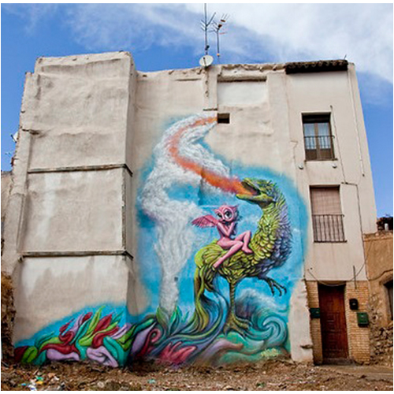

Avant-Garde Urbano, 2013
Large-scale outdoor mural created for the Avant-Garde Urbano urban art festival in Spain.

Work details
Description
In 2013 Ron English participated in the Avant-Garde Urbano mural program in Spain, producing a large outdoor wall as part of the festival. The work reflects his signature pop-surreal imagery and public-art approach within the setting of a European street art event.
Gallery
Add additional views here if available, such as installation photographs, detail shots, wider street views, or alternate documentation.